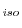

This command transfers coordinates of the equivalent atoms and their isotropic temperature factors (B ) from the template structures to the model.
The target sequence must be the last protein in the alignment, aln, and has to be the same as the model sequence. The template structures are all the other proteins in the alignment.
Before transferring coordinates, the template structures generally have to be explicitly least-squares superposed onto each other. This is most conveniently achieved with the alignment.malign3d() command called just before model.transfer_xyz(). This is an important difference relative to MODELLER-3, which did not require explicit superposition by the user. Note, however, that the automodel class script does this superposition automatically if you set automodel.initial_malign3d to True.
If cluster_cut is greater than 0, the transferred coordinates and B are the average of the templates in the largest cluster of the atoms. This cluster is obtained as follows (it only works when all templates and the target have exactly the same topology): For each residue position separately, calculate the maximal inter-template equivalent atom-atom distances (cluster_method = 'MAXIMAL_DISTANCE') or atomic RMS deviation (cluster_method = 'RMSD') for all template-template comparisons. Use the weighted pair-group average clustering method (the same as in the environ.dendrogram() command) to obtain the clustering tree for the given residue position. Find the clusters that contain residues joined above cluster_cut angstroms (1Å is a good value). Use the largest cluster in the averaging for the target coordinates. The number of residue positions at which each template contributes to the consensus is written to the log file ('The largest cluster occupancy'). Sometimes the first template contributes many more times than the rest of the templates. This results from having many residue positions where all ``clusters'' have one template only (the first cluster/template is then picked by default). This artifact can be corrected by specifying a larger cluster_cut. Two additional data files are also produced: nmemb.dat contains one line for each residue in the model, which lists the residue number, the number of clusters detected, and the number of templates in the largest cluster. occupancy.dat lists, for each residue, the indices of the templates in the largest cluster.
If cluster_cut is less than or equal to 0, the transferred coordinates and (B ) for a given target atom are the average of the coordinates of all the equivalent template atoms. cluster_method is ignored.
Both kinds of averaging, but especially the cluster averaging, are useful for deriving a consensus model from an ensemble of models of the same sequence. If the consensus model is optimized by the conjugate gradients method, it frequently has a significantly lower value of the objective function than any of the contributing models. Thus, the construction of a consensus model can also be seen as part of an efficient optimization. The reason why consensus construction frequently results in better models is that the consensus model generally picks the best (i.e., most frequent) conformation for the regions that are variable in the individual models, while it is very unlikely that a single model will have optimal conformation in all of the variable regions. The consensus construction may not work when two or more locally optimal conformations are inconsistent with each other (e.g., because of the atom overlaps).
Two atoms are equivalent if they have exactly the same name and are in the equivalent residues. Note that the $ATMEQV_LIB library of equivalent residue-residue atom pairs, which is used in the construction of homology-derived distance restraints, is not used here. The atom names in the target may not correspond to the atom names in the template files. In such a case, if you want to copy the template atoms' coordinates, you have to edit the atom names in the template atom files so that they correspond to the MODELLER atom names (which you can see in the .ini atom file). At least for water molecules, this is usually better than letting the optimizer deal with grossly incorrect starting positions.
Atoms which do not have an equivalent in any template are flagged on exit from this method as 'undefined' (by setting their coordinates to, and their B to 0.0). The coordinates of the undefined atoms of the model can be set with the model.build() command, which relies on the internal coordinates specified in the residue topology library or on various types of geometric interpolation and extrapolation.
# Example for: model.transfer_xyz()
# This will build a model for a given sequence by copying
# coordinates from aligned templates. When the templates
# have the same sequence as the target, this procedure ensures
# that the new model corresponds to the MODELLER topology library.
from modeller import *
env = environ()
env.io.atom_files_directory = ['.', '../atom_files']
env.libs.topology.read(file='$(LIB)/top_heav.lib')
env.libs.parameters.read(file='$(LIB)/par.lib')
# Read the sequence and calculate its topology:
aln = alignment(env, file='toxin.ali', align_codes=('2ctx', '2nbt'))
aln.malign3d(fit=False)
aln.append(file='toxin.ali', align_codes='1fas')
mdl = model(env)
mdl.generate_topology(aln['1fas'])
# Assign the average of the equivalent template coordinates to MODEL:
mdl.transfer_xyz(aln)
# Get the remaining undefined coordinates from internal coordinates:
mdl.build(initialize_xyz=False, build_method='INTERNAL_COORDINATES')
# Write the final MODEL coordinates to a PDB file:
mdl.write(file='1fas.ini')